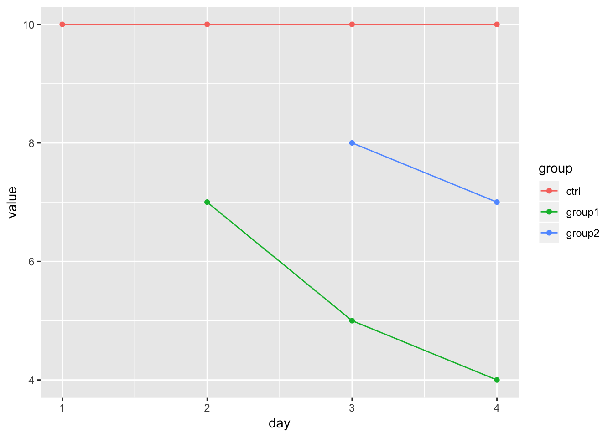
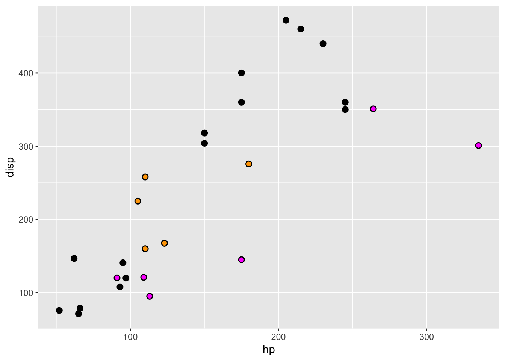
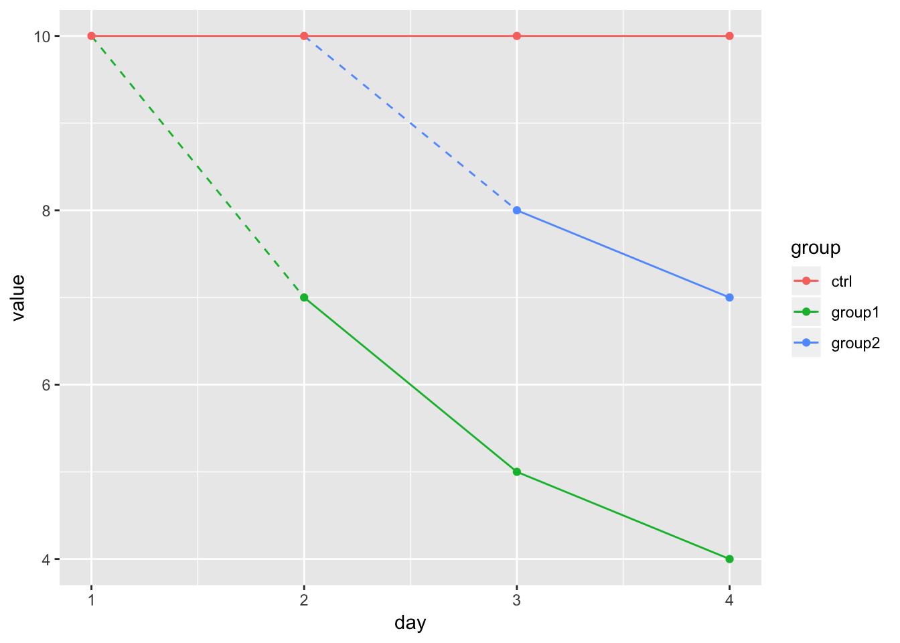

対照区に対していくつかの時点から処理を開始する試験区を設け、試験区ごとに一定間隔で取得した経時データを比較する。
dat <-
tibble(day = c(1:4, 2:4, 3:4),
value = c(10, 10, 10, 10, # ctrl
7, 5, 4, # group1
8, 7), # group2
group = c(rep("ctrl", 4),
rep("group1", 3),
rep("group2", 2))
)
p1 <-
dat %>%
ggplot(aes(day, value, color = group, group = group)) +
geom_point() +
geom_line()
print(p1)
処理開始時点を視覚的に伝えるため、group1はday1とday2、group2はday2とday3、を点線でつなぎたい。
愚直にやる
まず愚直にやる。
各処理区の処理前後時点のデータを作る。 処理開始前のデータは存在しないので、NA。
connected_points <-
dat %>%
tidyr::complete(day, group) %>%
dplyr::filter(group != "ctrl") %>%
dplyr::group_by(group) %>%
dplyr::do({
num_na <- sum(is.na(.$value))
dplyr::arrange(., day) %>%
dplyr::slice(num_na:(num_na+1))
})
print(connected_points)## # A tibble: 4 x 3
## # Groups: group [2]
## day group value
## <int> <chr> <dbl>
## 1 1 group1 NA
## 2 2 group1 7
## 3 2 group2 NA
## 4 3 group2 8処理開始前のデータを参照先の対照区のデータで置換する。
connected_points %<>%
dplyr::ungroup() %>%
dplyr::left_join(., filter(dat, group == "ctrl"), by = "day") %>%
dplyr::transmute(day, group = group.x,
value = dplyr::if_else(is.na(value.x), value.y, value.x))
print(connected_points)## # A tibble: 4 x 3
## day group value
## <int> <chr> <dbl>
## 1 1 group1 10
## 2 2 group1 7
## 3 2 group2 10
## 4 3 group2 8p1 + geom_line(data = connected_points, linetype = 2)関数化
関数化する。
手作業で30分掛かるものを3秒で終わらせるために3時間掛けるのがエンジニア、という持論を大切にしていきたい
— わかめそば@技術書典い05 (@wakamesoba98) 2018年7月21日
rlangを使ってdplyrっぽく引数をquoteしないで済むようにする。 毎回quosureについてぐぐっている気がする。
library(rlang)
extract_connect <-
function(tbl, time_var, y_var, group_var, ref_group){
time_var <- enquo(time_var)
y_var <- enquo(y_var)
group <- enquo(group_var)
connect <-
tbl %>%
tidyr::complete(!!time_var, !!group) %>%
dplyr::filter((!!group) != ref_group) %>%
dplyr::group_by(!!group) %>%
dplyr::do({
num_na <-
pull(., !!y_var) %>%
is.na %>%
sum %>%
{.:(.+1)}
dplyr::arrange(., !!time_var) %>%
dplyr::slice(num_na)
})
connect %>%
dplyr::ungroup() %>%
dplyr::left_join(dplyr::filter(tbl, (!!group) == ref_group),
by = quo_name(time_var), suffix = c("", "___ref___temp___")) %>%
dplyr::mutate(!!quo_name(y_var) := if_else(is.na(!!y_var), value___ref___temp___, !!y_var)) %>%
dplyr::select(-ends_with("___ref___temp___")) %>%
return()
}
dat %>%
extract_connect(time_var = day, y_var = value, group_var = group, ref_group = "ctrl") %>%
print()## # A tibble: 4 x 3
## day group value
## <int> <chr> <dbl>
## 1 1 group1 10
## 2 2 group1 7
## 3 2 group2 10
## 4 3 group2 8OK。
高階関数化
geom_XXXのdataは関数をとることができるらしい (r-wakalangでのyutannihilationさんの発言から)。
mtcars %>%
ggplot(aes(hp, disp)) +
geom_point(size = 2.5) +
geom_point(data = tail, col = "magenta") + # = geom_point(data = tail(mtcars), ...)
geom_point(data = function(x){filter(x, between(disp, 150, 300))}, col = "orange") # 引数が必要な場合は無名関数で書く
これを応用して簡単に分岐プロットを書く。 元データに応じてよしなに処理できるような関数を作るための高階関数を作る。
connector <-
function(time_var, y_var, group_var, ref_group){
time_var <- enquo(time_var)
y_var <- enquo(y_var)
group <- enquo(group_var)
function(tbl){
connect <-
tbl %>%
tidyr::complete(!!time_var, !!group) %>%
dplyr::filter((!!group) != ref_group) %>%
dplyr::group_by(!!group) %>%
dplyr::do({
num_na <-
pull(., !!y_var) %>%
is.na %>%
sum %>%
{.:(.+1)}
dplyr::arrange(., !!time_var) %>%
dplyr::slice(num_na)
})
connect %>%
dplyr::ungroup() %>%
dplyr::left_join(dplyr::filter(tbl, (!!group) == ref_group),
by = quo_name(time_var), suffix = c("", "___ref___temp___")) %>%
dplyr::mutate(!!quo_name(y_var) := if_else(is.na(!!y_var), value___ref___temp___, !!y_var)) %>%
dplyr::select(-ends_with("___ref___temp___")) %>%
return()
} %>%
return()
}
dat %>%
ggplot(aes(day, value, col = group, group = group)) +
geom_line(data = connector(day, value, group, "ctrl"), linetype = 2) +
geom_point() +
geom_line()
To Do
- 分岐時点が１時点前とは限らない
- 分岐時点を指定する情報が必要か？
- 欠測周り
- 練れていないので怪しい
- 元系列の分岐時点が欠測の場合は内挿する？
test-drivenなコード書きをしないといけないと思いながらもさぼっている。
Session Info
devtools::session_info()## setting value
## version R version 3.5.0 (2018-04-23)
## system x86_64, darwin15.6.0
## ui X11
## language (EN)
## collate en_US.UTF-8
## tz Australia/Sydney
## date 2018-10-07
##
## package * version date source
## assertthat 0.2.0 2017-04-11 CRAN (R 3.5.0)
## backports 1.1.2 2017-12-13 CRAN (R 3.5.0)
## base * 3.5.0 2018-04-24 local
## bindr 0.1.1 2018-03-13 CRAN (R 3.5.0)
## bindrcpp * 0.2.2 2018-03-29 CRAN (R 3.5.0)
## blogdown 0.8 2018-07-15 CRAN (R 3.5.0)
## bookdown 0.7 2018-02-18 CRAN (R 3.5.0)
## broom * 0.5.0 2018-07-17 CRAN (R 3.5.0)
## cellranger 1.1.0 2016-07-27 CRAN (R 3.5.0)
## cli 1.0.1 2018-09-25 CRAN (R 3.5.0)
## colorspace 1.3-2 2016-12-14 CRAN (R 3.5.0)
## compiler 3.5.0 2018-04-24 local
## crayon 1.3.4 2017-09-16 CRAN (R 3.5.0)
## datasets * 3.5.0 2018-04-24 local
## devtools * 1.13.6 2018-06-27 CRAN (R 3.5.0)
## digest 0.6.17 2018-09-12 CRAN (R 3.5.0)
## dplyr * 0.7.6 2018-06-29 cran (@0.7.6)
## evaluate 0.11 2018-07-17 CRAN (R 3.5.0)
## fansi 0.4.0 2018-10-05 CRAN (R 3.5.0)
## forcats * 0.3.0 2018-02-19 CRAN (R 3.5.0)
## ggplot2 * 3.0.0 2018-07-03 CRAN (R 3.5.0)
## glue 1.3.0 2018-07-17 cran (@1.3.0)
## graphics * 3.5.0 2018-04-24 local
## grDevices * 3.5.0 2018-04-24 local
## grid 3.5.0 2018-04-24 local
## gtable 0.2.0 2016-02-26 CRAN (R 3.5.0)
## haven 1.1.2 2018-06-27 CRAN (R 3.5.0)
## hms 0.4.2 2018-03-10 CRAN (R 3.5.0)
## htmltools 0.3.6 2017-04-28 CRAN (R 3.5.0)
## httr 1.3.1 2017-08-20 CRAN (R 3.5.0)
## jsonlite 1.5 2017-06-01 CRAN (R 3.5.0)
## knitr * 1.20 2018-02-20 CRAN (R 3.5.0)
## labeling 0.3 2014-08-23 CRAN (R 3.5.0)
## lattice 0.20-35 2017-03-25 CRAN (R 3.5.0)
## lazyeval 0.2.1 2017-10-29 CRAN (R 3.5.0)
## lubridate * 1.7.4 2018-04-11 CRAN (R 3.5.0)
## magrittr * 1.5 2014-11-22 CRAN (R 3.5.0)
## MASS * 7.3-50 2018-04-30 CRAN (R 3.5.0)
## memoise 1.1.0 2017-04-21 CRAN (R 3.5.0)
## methods * 3.5.0 2018-04-24 local
## modelr 0.1.2 2018-05-11 cran (@0.1.2)
## munsell 0.5.0 2018-06-12 CRAN (R 3.5.0)
## nlme 3.1-137 2018-04-07 CRAN (R 3.5.0)
## pillar 1.3.0 2018-07-14 CRAN (R 3.5.0)
## pkgconfig 2.0.2 2018-08-16 CRAN (R 3.5.0)
## plyr * 1.8.4 2016-06-08 CRAN (R 3.5.0)
## purrr * 0.2.5 2018-05-29 CRAN (R 3.5.0)
## R6 2.2.2 2017-06-17 CRAN (R 3.5.0)
## Rcpp 0.12.19 2018-10-01 CRAN (R 3.5.0)
## readr * 1.1.1 2017-05-16 CRAN (R 3.5.0)
## readxl 1.1.0 2018-04-20 CRAN (R 3.5.0)
## rlang * 0.2.2 2018-08-16 CRAN (R 3.5.0)
## rmarkdown 1.10 2018-06-11 cran (@1.10)
## rprojroot 1.3-2 2018-01-03 CRAN (R 3.5.0)
## rstudioapi 0.8 2018-10-02 CRAN (R 3.5.0)
## rvest 0.3.2 2016-06-17 CRAN (R 3.5.0)
## scales 1.0.0 2018-08-09 CRAN (R 3.5.0)
## stats * 3.5.0 2018-04-24 local
## stringi 1.2.4 2018-07-20 CRAN (R 3.5.0)
## stringr * 1.3.1 2018-05-10 cran (@1.3.1)
## tibble * 1.4.2 2018-01-22 CRAN (R 3.5.0)
## tidyr * 0.8.1 2018-05-18 cran (@0.8.1)
## tidyselect 0.2.4 2018-02-26 CRAN (R 3.5.0)
## tidyverse * 1.2.1 2017-11-14 CRAN (R 3.5.0)
## tools 3.5.0 2018-04-24 local
## utf8 1.1.4 2018-05-24 cran (@1.1.4)
## utils * 3.5.0 2018-04-24 local
## withr 2.1.2 2018-03-15 CRAN (R 3.5.0)
## xfun 0.3 2018-07-06 CRAN (R 3.5.0)
## xml2 1.2.0 2018-01-24 CRAN (R 3.5.0)
## yaml 2.2.0 2018-07-25 cran (@2.2.0)雑記
- 科研費申請書がつらい
- 途中で所属が変わるだろうし、その先も決まっていないのに「研究環境について書け」って無茶ぶりもいいとこ